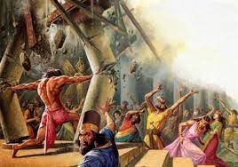
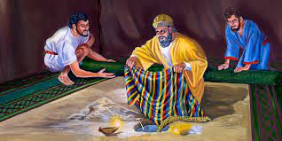

Artigos Recentes
- 
- 
Conheça mais sobre a palavra que nos traz a vida
Deus cria o homem e o forma com as próprias mãos(Gênesis: 2.7). Deus, passeava com eles no jardim do Éden(Gênesis: 3.8). Porém o homem comete um pecado (Gênesis: 3.6-7), e agora entra em um estado de morte(Gênesis: 2.17), o pecado começa a governar a humanidade(Gênesis: 6.5). No livro de Gênesis, nos mostra a criação do mundo, mas traz também como se iníciou o pecado e como o homem se tornou escravo(João: 8.34). Mas na situação de separação entre o Deus e o homem(Gênesis: 3.22-24), pois o pecado afasta o homem de Deus(Salmos: 5.4-6; Isaias: 59.2), uma esperança surgiu, "Eu porei inimizade entre ti e a mulher e entre a tua semente e a sua semente; esta te ferirá a cabeça, e tu lhe ferirás o calcanhar"(Gênesis: 3.15)
Deus manifestava seu amor aos homens justos com bençãos, em Enoque(Gênesis: 5.21-24), em Noé(Gênesis: 6.8), em Abraão(Gênesis: 12.2), mas também manifestava seu amor aos homens quando pecavam ao demonstrar misericórdia, no povo de Israel(Êxodo: 14.1-31) no caso do bezerro de ouro(Êxodo: 32.1-34). Mas não era o suficiente para trazer de volta a comunhão que o homem tinha com Deus no Éden, pois eles pecavam continuamente e mesmo que se arrependessem de algum pecado, cometiam outro logo em seguida e ainda pior que o anterior. Para perdoar pecados é necessário derramamento de sangue(Hebreus: 9.22).
Deus ordenou a criação do tabernáculo(Êxodo: 40), que servia para purificar o povo e asssim "Cobrir" os pecados deles. Mas novamente não era o suficiente, pois continuavam a pecar e o sacrifício tinha de ser feito todos os anos para perdão dos pecados do ano passado, não era o suficiente para perdoar os pecados de toda a vida do homem.
Deus durante toda a história do Antigo Testamento, estava em busca de trazer ao homem a salvação da escravidão do pecado e assim voltar a comunhão, a amizade de antes. Mas não era possível sem um sacrifício perfeito o suficiente para carregar consigo o pecado de todas as pessoas e de toda a vida delas(Hebreus: 10.10). Porém, se analizado com atenção, percebe-se que todas as ações do antigo testamento apontam para algo extremamente importante que está por vir mais a frente, isso é Jesus(Isaías: 7.14; Isaías: 9.2-7; Hebreus: 9.23-28;10.1-18) a possível esperança de salvação da humanidade.
Jesus inicía seu ministério aos 33 anos de idade, depois de vencer a tentação de Satanas. E ele inicía seu ministério pregando o arrependimento, "Arrependam-se dos seus pecados porque o Reino do Céu está perto!"(Mateus: 4.17 NTLH), Trazendo curas e perdoando pecados(Mateus: 4.24; Mateus: 9.2) e pregando o Nascer de Novo e o Reino de Deus(Mateus: 5-7; João: 3.1-8), e mostrou o quanto ama a humanidade quando em um momento perto de sua morte, quando estava no monte orando, ele orou por todos nós que no futuro creríamos nele(João: 17.20)
Após ser traido por Judas, os soldados romanos iriam prende-lo quando Pedro cortou a orelha do soldado que estava indo até Jesus, na mesma hora Jesus o repreende e cura a orelha desse soldado(João: 18.10; Lucas: 22.50-51), também ficou calado mesmo enquanto o zombavam(Mateus: 26.67-68; 27.27-31; 27.34-37; 27.39-44), Quando salvou o bandido que também estava sendo crucificado mesmo após ter cometido diversos pecados graves(Lucas: 23.39-43), Quando pediu ao Pai que perdoasse o pecado daquela gente, mesmo enquanto estes o zombavam(Lucas: 23.34), E quando morreu por nós mesmo sendo completamente inocente(Lucas: 23.46-48). "Mas Deus nos mostrou o quanto nos ama: Cristo morreu por nós quando ainda vivíamos no pecado"(Romanos: 5.8 NTLH)
Quando os Anjos anunciaram o cumprimento da palavra de Jesus a Maria Madalena, Salomé e a outra Maria: "O Filho do Homem precisa ser entregue aos pecadores, precisa ser crucificado e precisa ressuscitar no terceiro dia"(Lucas: 24.7), Quando Jesus apareceu as mulheres(Mateus: 28.9-10; Marcos: 16.9-11; João: 20.11-18), Quando apareceu com uma aparência diferente a dois dos seus seguidores e jantou com eles(Lucas: 24.13-35; Marcos: 16.12-13), e também quando apareceu aos seus 11 discípulos(Mateus: 28.16-20; Marcos: 16.14-18; Lucas: 24.36-49; João: 20.19-29), Ao prometer o poder de Deus a eles para levarem a palavra de salvação a todo mundo(Mateus: 28.18-20; Marcos: 16.15-18; Lucas: 24.47-49; Atos: 1.1-8), Ao dar instruções aos discípulos que estavam pescando ajudando-os a pegar muitos peixes(João: 21.1-14) e quando o anjo disse como promessa, enquanto Jesus subia aos céus, que do mesmo modo como Jesus havia subido ele voltaria(Atos: 1.11) e essa volta é o que chamamos de arrebatamento, que é quando Jesus virá buscar seu povo para morar onde ele mora(João: 14.1-3) e então morarmos com ele na cidade de Glória(Apocalípse: 21-22)
O Consolador(João: 16.4-15), nosso suporte como prometido(João: 14.15-26) é enviado para auxiliar os crentes(Atos 2.1-13), Pedro mostrando a transformação de comportamento causado pelo espirito santo, prega e quase 3 mil almas se rendem a Jesus(Atos: 2.14-42). O modo de vida dos primeiros crentes, tendo plena união, serve de exemplo até os dias de hoje(Atos: 2.43-47; Atos: 4.32-37)
Mesmo quando pecamos, somos perdoados por Deus. Pois, temos agora um advogado(João: 2.1), e ele intercede por nós ao Pai. O espirito Santo trabalha no coração do homem, fazendo com que ele reconheça que pecou e queira buscar a mudança(João: 16.8), sem o Espirito Santo é impossível alcançar a salvação, pois somente ele pode convercer o homem, portanto agora na graça(Favor não merecido ou salvação pelo Sangue de Jesus), não somos julgados pelas nossas ações, melhor dizendo, não são as nossas atitudes que provocarão a salvação em nós, mas apenas a Misericórdia e o Amor de Deus(Efésios: 2.7-10). Portanto não há como um salvo não querer mudar e seguir tudo que está na Bíblia, pois o Espirito Santo agora mora dentro dele e provoca a santificação(Levitico: 20.8) e o desejo ardente por Deus, o que chamo de "Amor Original".
O homem traiu a Deus, mesmo assim Deus buscou trazer de volta a comunhão com a humanidade, coisa que só foi possível pelo sacrifício de Cristo. Agora Jesus enviou o Espirito Santo que transforma o Homem, permitindo reatar a ligação com Deus e para melhorar, temos uma promessa: "Na casa de meu Pai há muitas moradas; se não fosse assim, eu vo-lo teria dito. Vou preparar-vos lugar. E quando eu for, e vos preparar lugar, virei outra vez, e vos levarei para mim mesmo, para que onde eu estiver estejais vós também."(João: 14.2-3). Deus nos Ama!